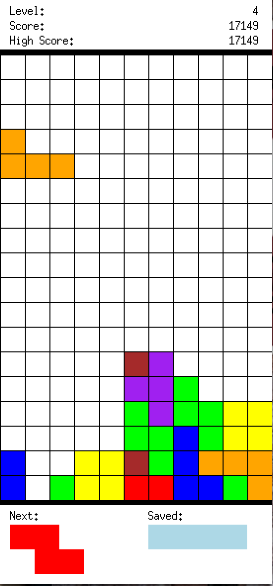
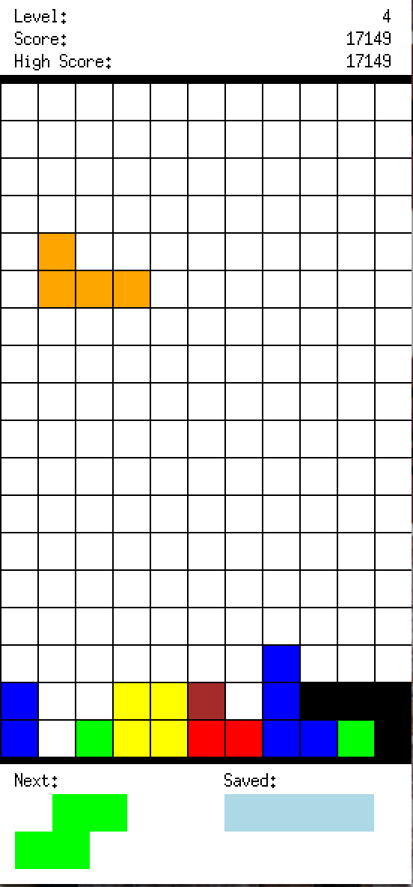

Fully functional tetris game with multiple levels and additional features!
4 different levels with increasing difficultly based on probabilities of random block generation
The ability to turn on and off realtime downward movements of blocks, implemented using multi-threading and lambda functions
Bonus "computer" move uses complex scoring logic to suggest the best possible move given the board.
The scoring mechanism differs from the original game slightly: in addition to getting points for clearing rows, you also get additional points for clearing blocks.
Used several C++ OOP principles such as RAII, pimpl

The highscore is persisted throughout the session.

Note: hint is represented as a black shadow block on the board.